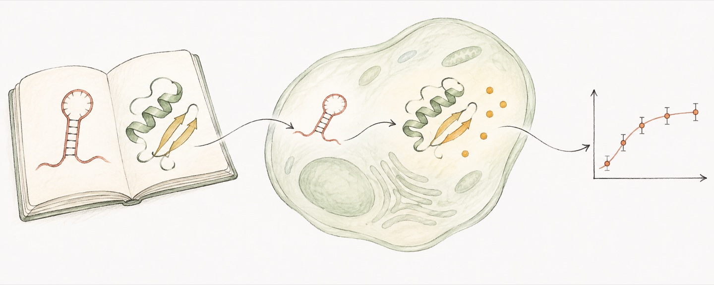

When should a biological system act?

My doctoral research focused on programmable translation control and delivery vector design for circular RNA. It led me to a broader question: how can biomolecular systems sense cell state and be controlled? Encoding a function in a design is a beginning. That function needs to occur in the right cells, place, and time.
This draws my interest to the relationship among RNA, proteins, and delivery. A designed function has to pass through a specific set of conditions before it can occur in a cell. Reaching the intended location, becoming available to the cell, and producing the desired output are different questions. Following that process helps me understand what a result actually answers.
The timing of the output matters
How long an output lasts changes the question. Sometimes the desired response is a pulse. Sometimes it needs to continue. I want to understand how changes in cell state affect those responses, and how a system can begin when needed and stop at an appropriate time.
Stopping and clearance are control questions I want to understand as well. Can a system clear naturally? Would someone need to stop its activity? What effects remain afterward? Concentrating only on the initial response would leave out how the function changes over time.
What does a measurement tell us about function?
I want to connect each measurement with the question it can answer. A signal in a tissue leads to further questions about what happened inside the cells. Expression leads to a question about whether the intended behavior occurred. The relationships among distribution, expression, and function deserve separate attention.
I also want to ask whether those relationships hold when the cell state or environment changes. Knowing where a design works and where it fails helps describe its function more precisely.
For postdoctoral research, I hope to study immune regulation further. I am interested in vaccines, cancer vaccines, and clinical research involving CAR-T therapies. These are directions I want to pursue next. They continue the questions that interest me now. How can a biological system respond appropriately where it is needed? How long should that response last, and how should it end?
I want to connect molecular design with practical needs. A system may deserve further study because it produces a useful function, or because it helps explain why that function appears only under certain conditions.